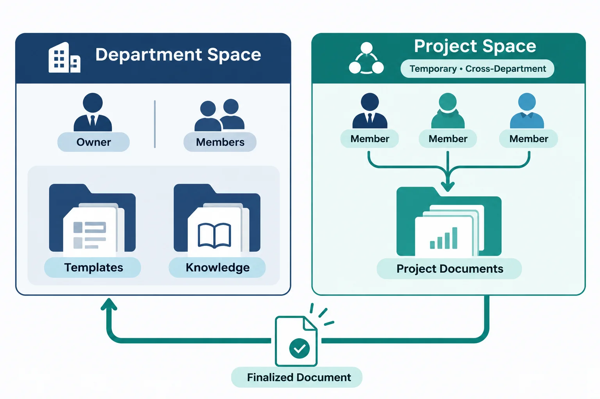

Article · 飞函
飞函的共享空间适合按部门建，还是按跨部门项目建
一个项目要同时用到产品方案、研发文档和交付材料。文件全放进各部门的空间，项目成员可能需要反复找人索取；全部集中到项目空间，项目结束后又可能没人说得清哪些文件该由谁长期维护。飞函的共享空间该按部门建，还是按跨部门项目建？先看文件的归属和协作周期。
长期维护的资料，按部门建
制度、模板、部门知识库等资料通常有稳定的维护团队。为这类资料建立部门共享空间，便于明确谁负责更新、谁可以使用，以及人员调整后由谁接手。其他部门偶尔需要某份资料，不意味着整套资料都要搬进项目空间。
围绕交付流转的文件，按项目建
跨部门项目会产生会议材料、待确认方案、测试反馈和交付清单。它们的共同点是参与者来自不同部门，讨论和修改围绕同一个交付目标展开。为项目建立共享空间，可以让成员在同一处处理工作文件，减少多个部门各存一份带来的版本混乱。
划分时可以用一个简单问题判断：**项目结束后，这份文件仍由某个部门持续维护吗？**如果是，部门空间更适合作为长期归处；如果文件主要服务于当前项目，就放在项目空间协作。需要两边使用时，先约定哪一处保存正式版本，避免形成两份都被当作最终稿的文件。

空间建好后，还要把权限和收尾写清楚
飞函网盘提供共享空间，并支持按成员或部门分配共享权限。建空间时，可先列出文件负责人、需要参与的部门和具体成员，再按实际职责设置访问范围。项目需要某部门参与，不等于该部门所有人都需要访问全部项目文件；涉及范围较窄的材料，应单独核对成员权限。
项目结束时，再做一次文件清点：确认最终版本、确定后续维护部门，并检查项目成员是否还需要保留访问权限。部门空间承接长期资料，项目空间承接阶段性协作，两种划分可以并用。关键是让每份文件都有明确的维护责任、协作位置和结束后的去向。